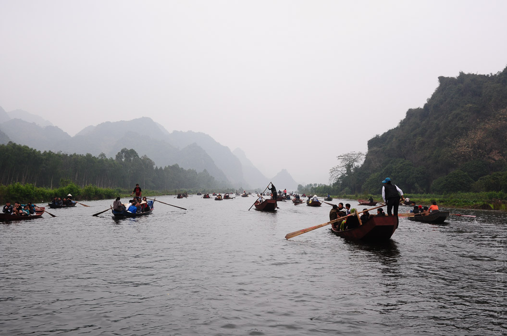
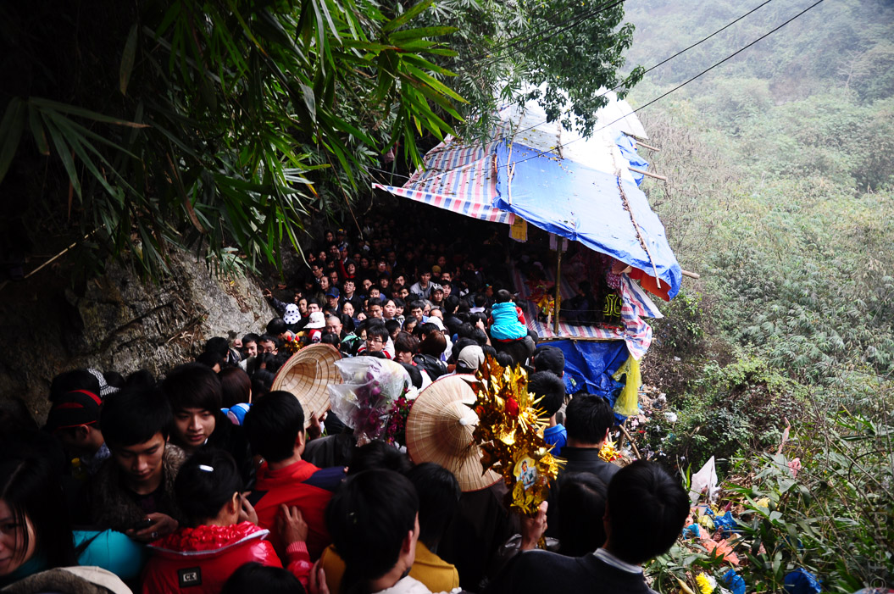

Unser Ausflug zur Parfum-Pagode ist zeitlich etwas ungünstig mit den Feierlichkeiten zum buddhistischen Neujahrsfest zusammengefallen. Dass die Fahrt im Ruderboot entlang der kleinen Karstberge nicht unbedingt idyllisch werden würde, war uns klar. Dass man den Fluss unter den hunderten von Booten aber kaum noch sehen konnte, hätten wir nicht erwartet. Da wir ausgerechnet sonntags gefahren sind, sind wir auf zigtausende Pilger gestoßen, die ihren Segen erneuern wollten. Das gesamte Areal war ein einziges Volksfest. Unter den ganzen Pilgern war unsere Handvoll Touristen allerdings die Hauptattraktion.
Die Wanderung auf den "Berg der duftenden Spuren" hat sich als Spießrutenlauf durch eine endlose Kette von Verkaufsständen erwiesen. Da der Weg mit Wellblech überdacht war, konnte man die hübschen, nebligen Hügel noch nicht mal erahnen. Auf halbem Weg nach oben wurde die Menschenmenge so dicht, dass es kein Fortkommen mehr gab. Uns lief die vom verpeilten Führer zu knapp bemessene Zeit weg. Daher mussten wir nach einer Viertelstunde Stillstand in einem Block drängelnder Vietnamesen umkehren, ohne auch nur einen Blick auf die Parfum-Pagode werfen zu können.
Wir haben uns mit den weiter unten liegenden Pagoden getröstet, von denen die unterste auch wirklich sehr schön war. Durch die Unzahl an Menschen, die hier teilweise auch kampiert haben, bekamen wir einen lebhaften Eindruck von Pagoden "in Aktion" - samt Handytelefonaten, Opferdränglern und jeder Menge Spaß am Verbrennen. Auch wenn das eigentliche Ziel verfehlt war, war es doch recht interessant, das Spektakel mitgemacht zu haben. In drei Wochen, wenn die Festtage vorbei sind, wird die Pagode wohl nur noch von Touristen besucht werden.